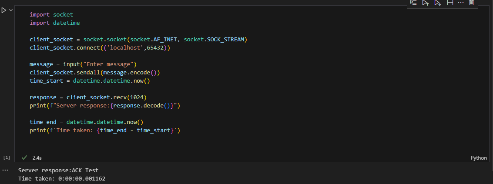
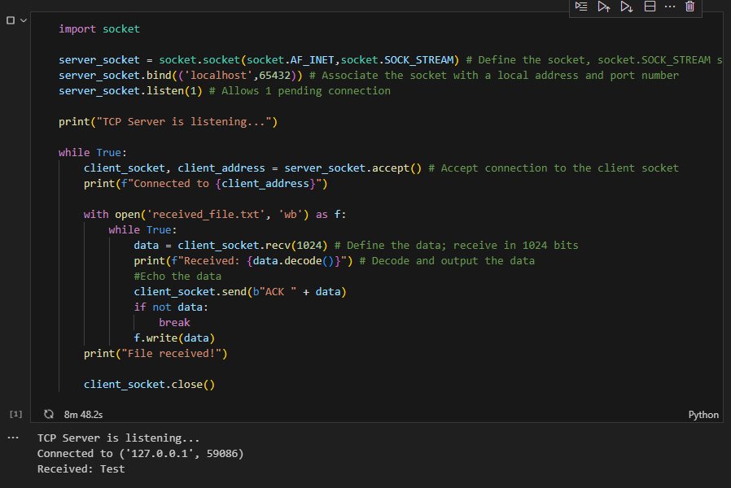

The Network Layer (also known as the Internet Layer) is responsible for routing data packets across networks using IP addresses to identify the source and destination. The core function includes addressing, routing packetisation and fragmentaion and reassembly of the packets. IP addressing provides logical identification for devices. Routing determines the best path for data transmission, using OSPF and BGP. Packetisation involves encapsulating the segnments from the transport layer segments into IP datagrams, and fragmentation ensures the packets fit within the MTU of a network.
IP addressing follows a hierachical structure, using IPv4 (32-bit). Different address classes define network sizes. Private addresses are used in local networks, and require Network Address Translation for extenal communication.
DHCP (Dynamic Host Configuration Protocol) dynamically assigns IP addresses to hosts as they join a network. It allows devices to obtain temporary IPs. DHCP involves the process of Discover, Offer, Request and Acknowledge (DORA).
NAT (Network Address Translation) enables multiple devices within a local network to share a single public IP address, enhancing security and conserving IPv4 addresses.
Routing and forwarding are key network layer functions. Routing determines the best oath for data using routing tables and protocols, while forwarding involves moving packets from an input interface to the appropriate output interface. Static routing is manually configured and used mainly in small networks, whereas dynamic routing adapts to network changes.
 These two Python scripts implement a simple TCP-based client-server communication system, where the client sends a message to the server, and the server acknowledges receipt while saving the received data to a file. The server script begins by creating a TCP socket using socket.SOCK_STREAM, binding it to localhost on port 65432, and listening for incoming connections. When a client connects, the server receives data in 1024-byte chunks, printing each received message before writing it to a file named received_file.txt. After receiving data, the server sends an acknowledgment message and closes the client connection once the transfer is complete.
The client script, on the other hand, establishes a TCP connection with the server at localhost:65432. It prompts the user to enter a message, which is then sent to the server. To measure communication latency, the client records the time before sending and after receiving a response. The server's acknowledgment message is displayed on the client side, along with the total time taken for the exchange.